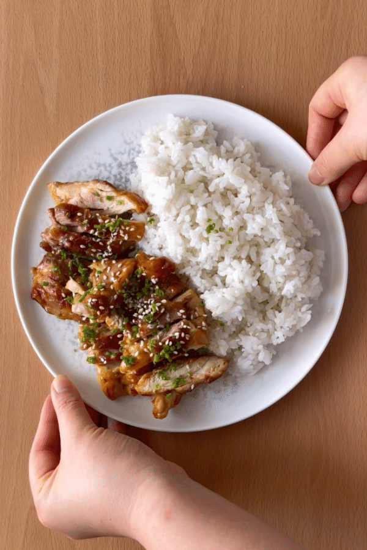
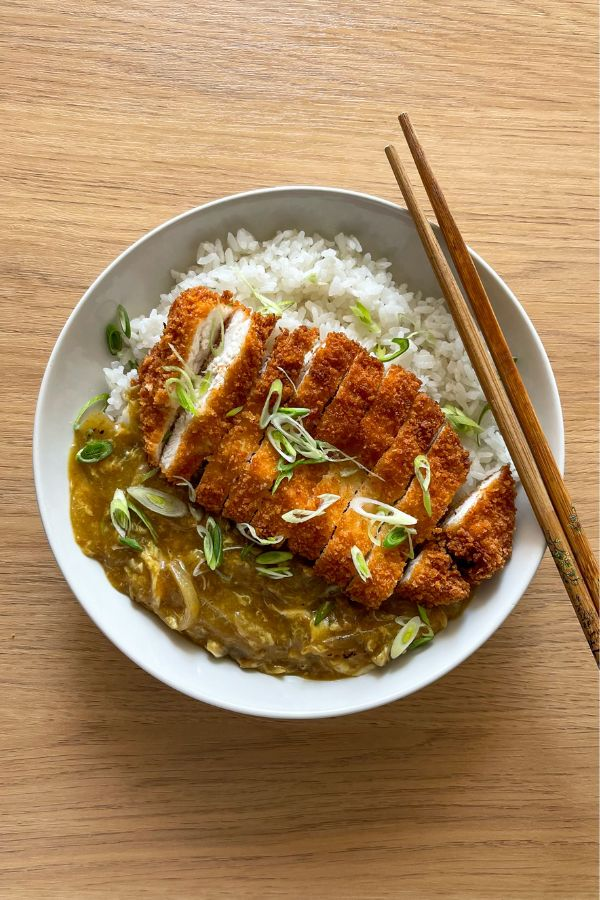
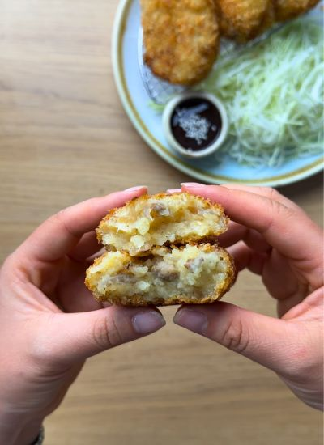
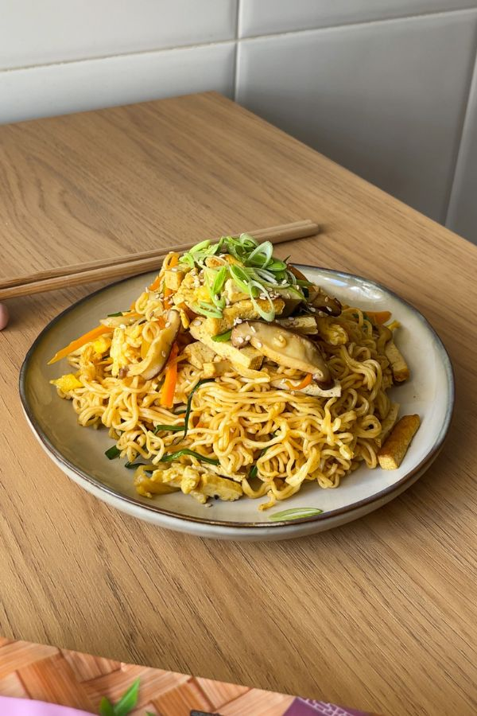
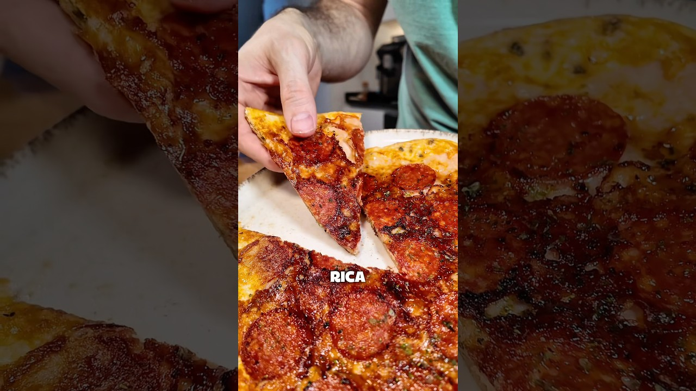
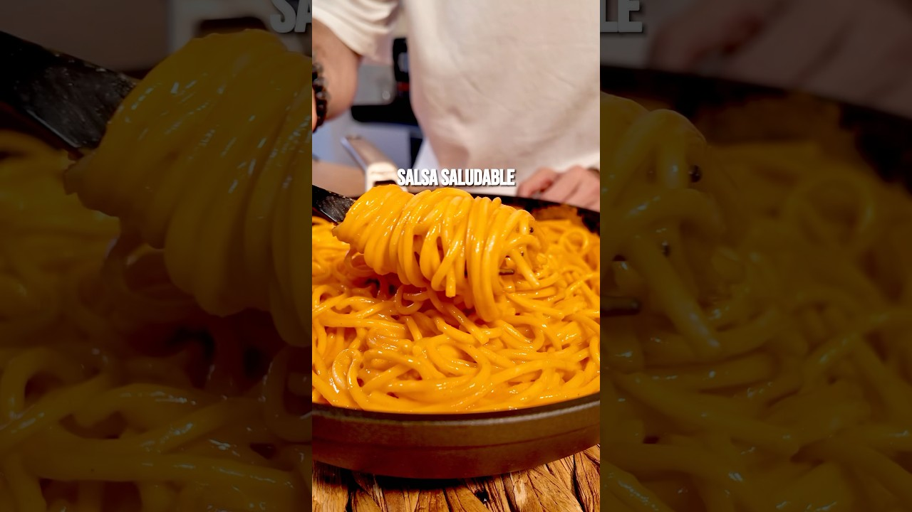
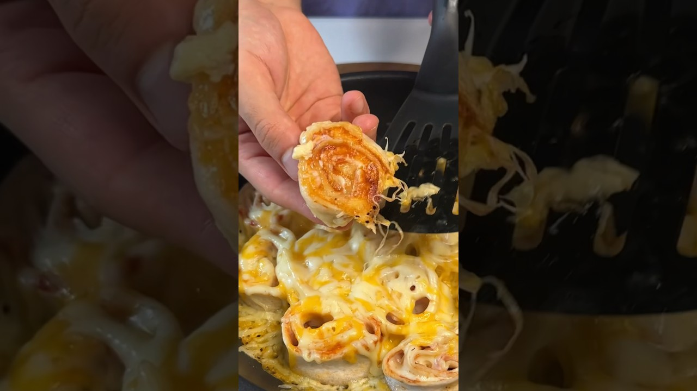
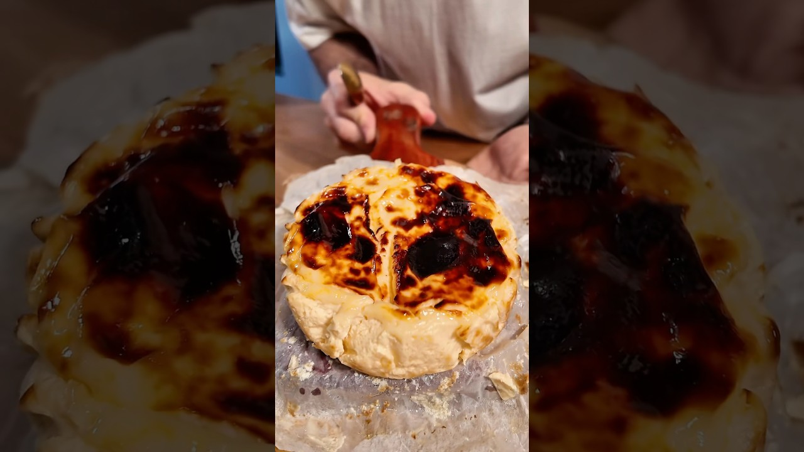
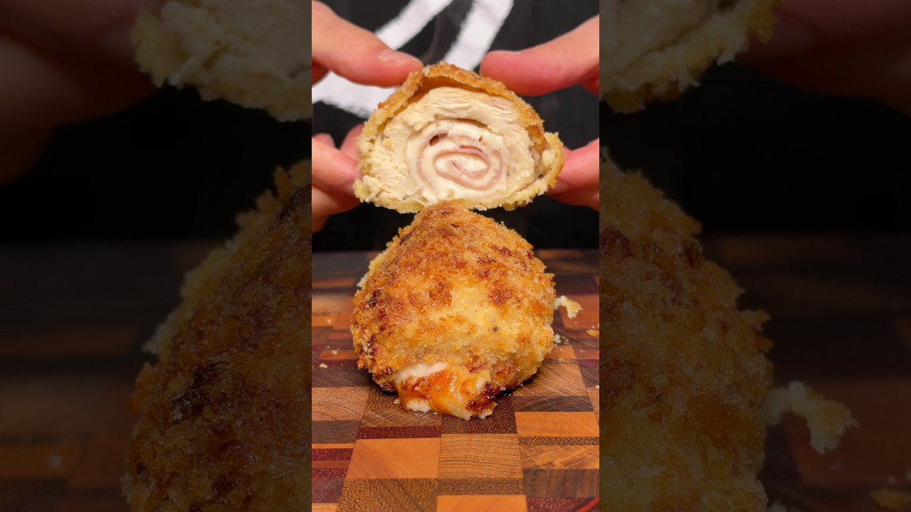

Cocina
← Apps
Mis Recetas

Principales
Pollo Teriyaki con Arroz

Principales
Katsu Curry Japonés

Principales
Croquetas Japonesas (Korokke)

Principales
Fideos de Arroz Chinos con Verduras

Principales
Fideos Asiáticos en 20 Minutos

Cenas rápidas
Wrap Crujiente Alto en Proteína

Principales
Salsa de Pasta con Cherry y Burrata

Cenas rápidas
Rolls de Jamón y Queso

Postres
Tarta de Queso Saludable

Principales